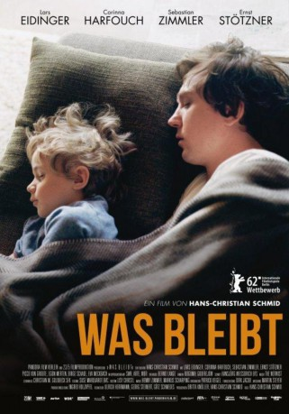

#5215 Was bleibt
 
 IMDB-Wertung: 6.6 / 10
IMDB-Wertung: 6.6 / 10  Metascore: 0
Metascore: 0 
Auf Wunsch seiner Mutter Gitte fährt Marko, der seit Jahren in Berlin lebt, zu seinen Eltern aufs Land. Seine Hoffnung auf ein ruhiges Wochenende im Kreis der Familie erfüllt sich nicht. Unerwartet für alle offenbart Gitte, dass es ihr nach langer psychischer Krankheit wieder gut geht. Als einziger entspricht Marko ihrer Bitte, sie von nun an als vollwertiges Mitglied der Familie zu behandeln, und bringt damit nicht nur die vermeintlich gut eingespielte Beziehung seiner Eltern aus dem Gleichgewicht.
Jahr: 2012
Dauer: 84 Minuten
FSK: 12
Land: Deutschland Studio: Pandora Film VerleihTonspuren:
Untertitel: Englisch,
Auflösung: 1080p (1920x1040) Größe: 6717 MB
Genre: Drama
Regisseur: Hans-Christian Schmid
Drehbuch: Walter Matthias Diggelmann
Soundtrack:
Darsteller:
 Lars Eidinger als Marko Heidtmann
Lars Eidinger als Marko Heidtmann Corinna Harfouch als Gitte Heidtmann
Corinna Harfouch als Gitte Heidtmann- Egon Merten als Zowie Heidtmann
- Eva Meckbach als Tine Gronau
- Sebastian Zimmler als Jakob Heidtmann
- Picco von Groote als Ella Staudt
- Angelika Richter als DB-Kellnerin
- Ines Krug als Heilpraktikerin
- Ernst Stötzner als Günter Heidtmann
- Birge Schade als Susanne Graefe
- Gerhard Hermann als Einsatzleiter
- Jörg Malchow als Polizist
Datei: X:\2012(N-Z)\Was bleibt (2012, FSK12, 1920x1040).mkv seit 02.01.2017
Festplatte: HD 2012(N-Z)-2013(A-H)
 Es gibt insgesamt 138 Filme in der Gruppe '2012(N-Z)'
Es gibt insgesamt 138 Filme in der Gruppe '2012(N-Z)'